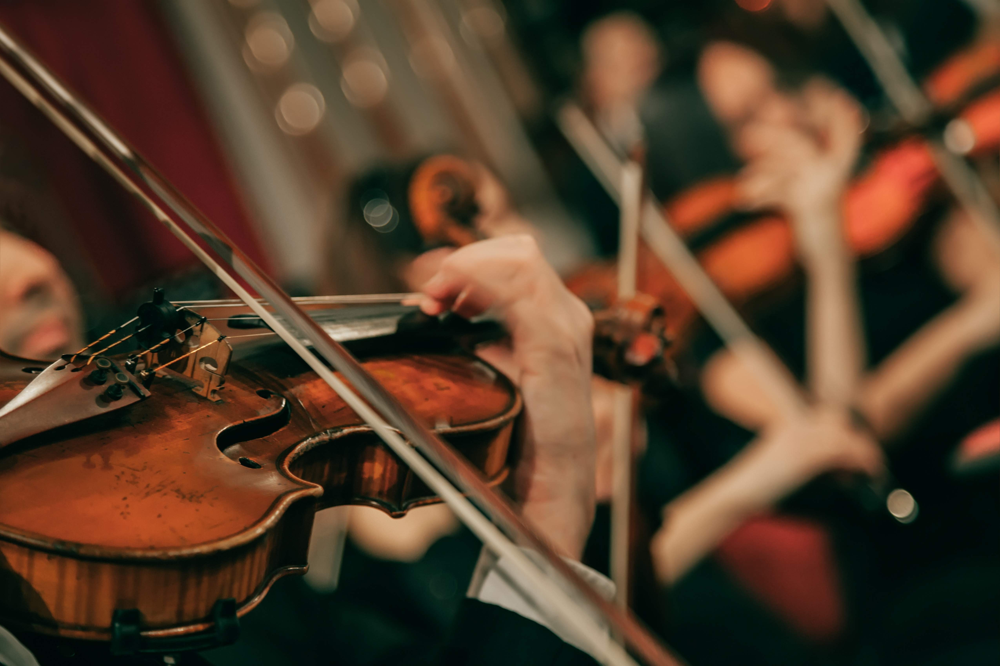
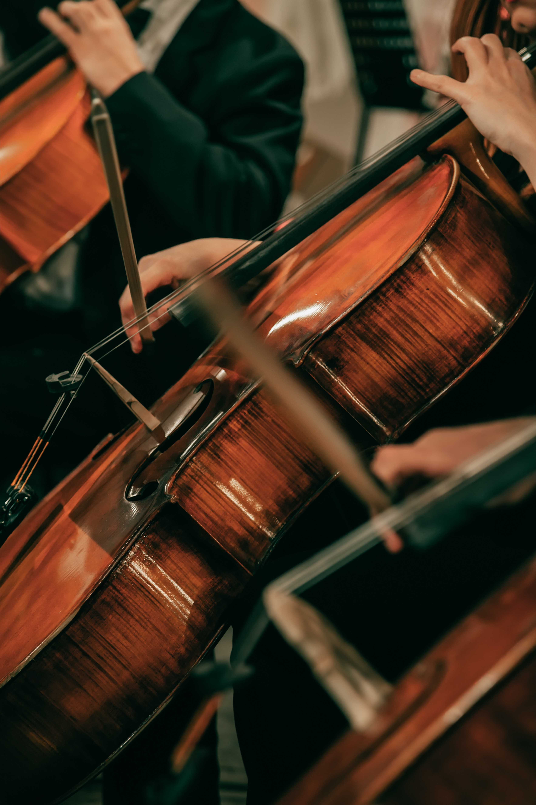
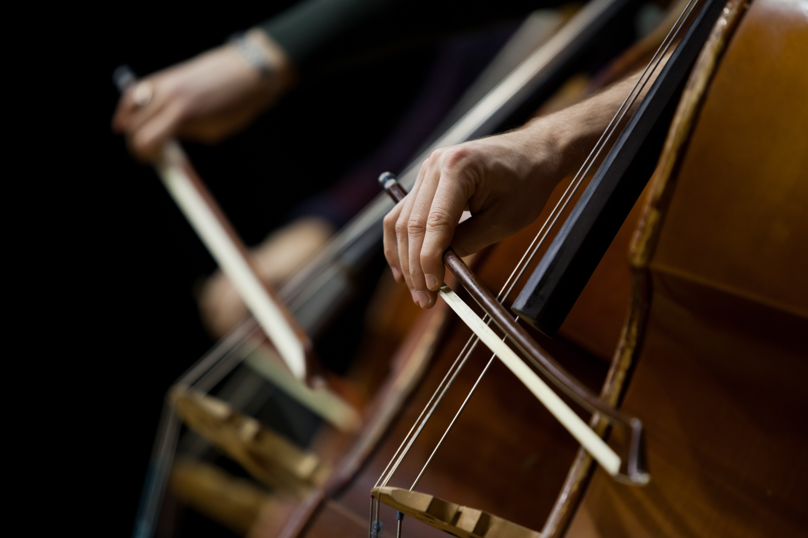

Beethoven Symphony No. 3 with Peter Oundjian
NOV 4-6 FRI-SAT 7:30 SUN 1:00

Tchaikovsky Piano Concerto No. 1 with Olga Kern
DEC 2-4 FRI-SAT 7:30 SUN 1:00

Ravel’s Daphnis et Chloé
JAN13-15 FRI-SAT 7:30 SUN 1:00

Beethoven Symphony No. 8
FEB 10-12 FRI-SAT 7:30 SUN 1:00

Beethoven’s Emperor Concerto
February 24-26 FRI-SAT 730 SUN 1

Bartók Concerto for Orchestra
March 10th-12th FRI-SAT 7:30 SUN 1:00

Brahms Requiem with Peter Oundjian
Mar 24–26 FRI–SAT 7:30 SUN 1:00

Beethoven Violin Concerto
Apr 21-23 Fri & Sat 7:30 Sunday 1:00

Vivaldi's The Four Seasons
OCT14-16 FRI-SAT 7:30 SUN 1:00
Symphonic bliss awaits you as your Colorado Symphony and guest conductor Aram Demirjian present a powerhouse program highlighted by Vivaldi’s programmatic masterpiece, The Four Seasons. As striking and admired as ever, this work conjures imagery that deftly captures the essence of spring, summer, autumn, and winter through music that manages to remain strikingly modern three centuries after its debut. Paul Huang is just the virtuoso to embrace this beloved concerto in its return to Boettcher Concert Hall. The grand finale — Tchaikovsky’s Fourth Symphony — is a meticulously structured meditation on fate that endures as one of his most popular and identifiable compositions. Over four movements, Tchaikovsky transforms his personal battle with fate into one of humanity’s most powerful works of art. Among today’s best and brightest composers, Jessie Montgomery’s Strum draws on the spirit of dance, movement, and American folk expressions in an ecstatic celebration that will have you on the edge of your seat.
Featured Artists Aram Demirjian, conductor Paul Huang, violin
Repertoire JESSIE MONTGOMERY Strum VIVALDI The Four Seasons, Op. 8, No. 1-4 TCHAIKOVSKY Symphony No. 4 in F minor, Op. 36